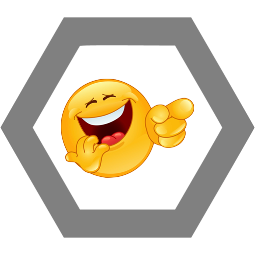

Zdání může klamat. Přestože může působit jako surový ranař, Kuba je velice talentovaný režisér a všestranný umělec. Avšak nenechte se jeho citlivější stránkou oblbnout, pořád je schopný vás zničit, pokud se mu znelíbíte. Jeho léta profesionálního boxování už můžou být pryč, ale technika a síla mu zůstala.

Pravý Alfa Samec
Pokud Kuba uslyší, že někdo je větší nebo silnější než on, nastartuje svoje záložní testosteronové baterie a vydává se uvést věci na pravou míru. Čím větší nepřítel, tím silnější je Kubova reakce. 10% nepřítelovi síly je přidáno ke Kubově síle a životům.
Já preferuji kubánské
Kuba si zapálí Churchill doutník značky Romeo y Julieta a s chutí začne potahovat. Vytvoří obrovský oblak kouře, ve kterém se nepřítel hůř orientuje. Pro Kubu je tento oblak jako druhý domov a cítí se v něm skvěle. Nepřítel 30% Blind, Kuba +15 attack speed
Mistr bench pressu
Kuba skočí pod nepřítele, popadne ho a hodí s ním proti zdi. Stun 2.5s
Budeš to ještě jíst?
Kuba je známý pro svůj velký apetit. V momentě nepozornosti sní nepříteli všechno jídlo a odepře mu tak možnost dobíjet energii a hydratovat se. Stamina -40%, Strenght -30% Rychlost -30%

Ulti
Chceš říct vtip? Kuba nabídnutím vtipu zaskočí nepřítele nepřipraveného. Přestože se může zdát, že vtip je znamení míru, jedná se pouze o klam. Kuba vtipem zesměšní nepřítele a pak se mu ještě 3 minuty směje nahlas do obličeje. Přihlížející si nemohou pomoct a posmívají se taky. Stun 5s, Self Esteem -50%, Damage -15%